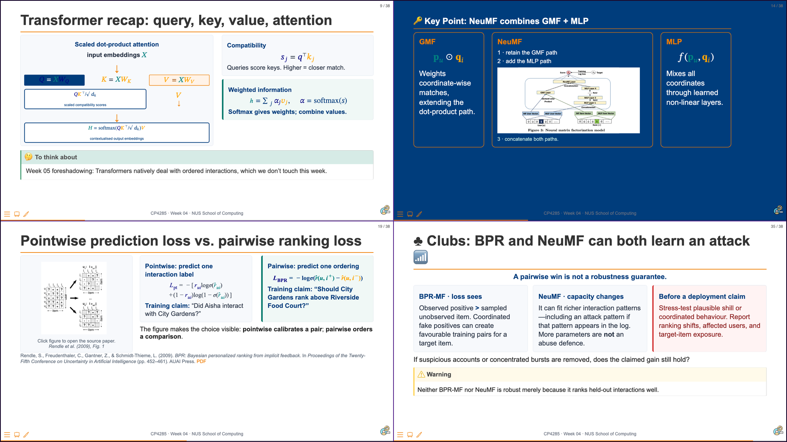
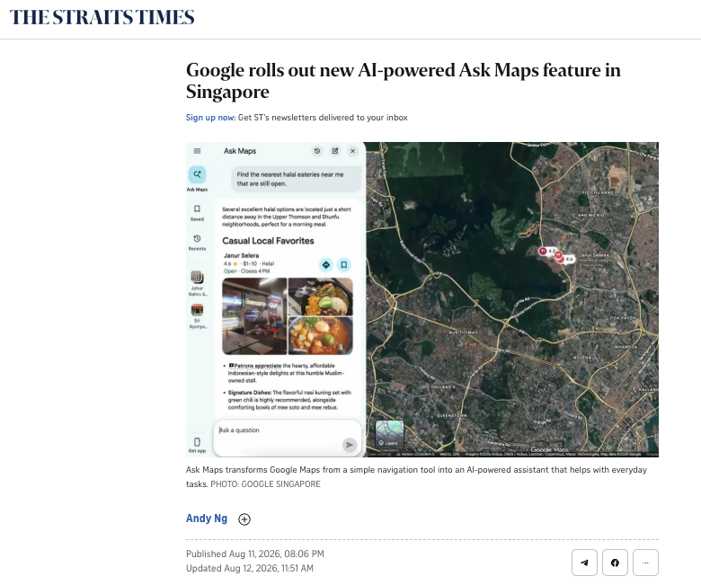
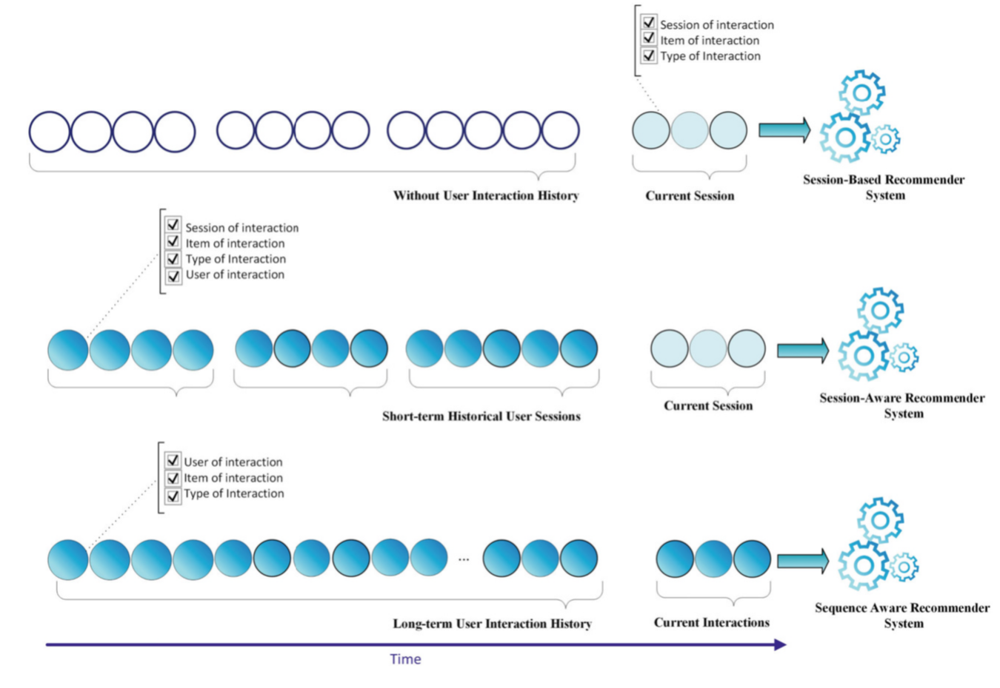

Sequential and Session-Based Recommendation
CP4285 Modern Recommendation Systems — Week 05
soc-n.us/cp4285-t2610-w05
08 Sep 2026
01 Announcements and Context
Changelog
- 6 Sep 2026 — Added the Weeks 01–05 quiz-question contribution and Week 07 quiz details.
- 5 Sep 2026 — Added the Week 04 recap and Week 06 preview.

Quizzes - From Week 01 (10%)
- Quizzes are jointly created by peers and instructors
- Peers contribute candidate questions, answers, and worked solutions where needed
- Min assigns each student a week, lecture section, difficulty, and question format.
- Min curates, verifies, and finalises questions so that assessments remain fair, accurate, and aligned with the course learning outcomes.
- Combined worth 10% of total marks
- AI tools must not be used during in-class quizzes.
Note
Co-creation makes quizzes part of the pilot course: students help build better learning materials for this cohort and future cohorts.
Peer Quiz Question-Bank Contribution
Covers Weeks 01–05. Your identifier determines one lecture section and one difficulty: easy, medium, or hard.
Your assigned contribution
- Two MCQ/MRQ questions, two fill-in-the-blank questions, or one calculation question with full working
- Include the answer for every question.
Submit on Canvas by Mon, 21 Sep 2026, 23:59 SGT. You have two weeks to prepare.
Week 07 (Open Book) Quiz · Tue, 28 Sep 2026
~30 minutes at the beginning of class. A mix of instructor and peer questions, completed on paper and proctored.
02 Lecture Overview

Canvas discussion board · post before Mon, 7 Sep 2026 · 23:59 SGT
Post one 100–140 word decision memo. No classmate reply is required.
Next week: sequences make order, recency, and local context part of the recommendation signal.
Which interaction history is available?

Session-based
Use the ordered events in the current session when no durable history is available.
Session-aware
Combine the current session with earlier sessions from an identified user.
Sequence-aware
Model a longer ordered history when earlier interactions may still matter.
Source: Ravanmehr, R., & Mohamadrezaei, R. (2024). Session-based recommender systems using deep learning (Fig. 1.3, p. 15). Springer. https://doi.org/10.1007/978-3-031-42559-2
Week 05: What changes when interactions have an order?
Week 04
Attention selected useful features for a user-item score.
Week 05
A sequence model selects useful earlier actions to predict the next item.
By the end of today, you should be able to:
- model temporal preferences;
- implement next-item prediction;
- compare static and dynamic representations; and
- critically assess engagement-driven objectives.
03 Session-Based Models
The immediate-intent problem
Observed now
“late-night halal food” → nearby restaurant pages → delivery times
Do not infer too much
A short trace can reveal a task without revealing a permanent identity or preference.
Session-based recommendation: predict a next item from the ordered interactions in the current, often anonymous, session.
Sessionisation is a modelling decision
Has enough inactivity elapsed to make a new task plausible?
Did the intent move from museum planning to food delivery?
Do location, timing, and actions still support one coherent task?
Note
The boundary is an operational rule, not direct proof of intent.
From an event log to next-item examples
| Observed prefix | Training target |
|---|---|
| [ramen] | halal filter |
| [ramen, halal filter] | delivery time |
Start with baselines worth beating
Session popularity
What is commonly consumed in a comparable context?
Co-occurrence
What is often seen after the current item?
Nearest session
Which previous sessions have a similar prefix?
🎰 Bandit Time: What should this system use?
An anonymous visitor opens three late-night restaurant pages. What is the best starting representation?
GRU4Rec: carry a changing session state
Update gate
How much useful context should the model retain?
Reset gate
Which old context should stop dominating the state?
Watch for the GRU intuition
While you watch
Which gate would help after a user abruptly shifts from planning museums to finding food delivery?
The clip explains GRUs generally; the instructor maps the idea to GRU4Rec.
GRU4Rec implementation and evaluation lens
Batch
Advance many active sessions together; reset a state when a session ends.
Score
Compare the state with candidate-item representations.
Evaluate
Use future sessions and report Hit Rate, MRR, or NDCG at K.
👥 Card-suit design clinic: current intent, accountable treatment
Your group receives one card-suit lens. For the late-night halal-food session, propose one recommendation policy, one safeguard, and one evidence gap.
How might manipulated activity distort the session?
Can social context help without conformity or privacy harm?
Can the list support discovery beyond the popular head?
Which stated requirement must remain visible and stable?
Write a two-sentence report before the timer ends. These are situational treatment lenses, not demographic labels.
Session model selection: relevance is not a profile rewrite
| Situation | Useful starting point | Guardrail |
|---|---|---|
| Anonymous, short session | Co-occurrence or GRU4Rec | Do not overclaim durable preference |
| Sharp task shift | Session-aware hybrid | Keep stated constraints visible |
Warning
Optimising the next click can reward urgency, repetition, or curiosity without showing that the task was genuinely helped.
Break — 5 minutes
☕ BREAK
A session is a useful operational window, not a complete story about a person.
04 Sequential Recommendation
From the current session to a user sequence
Session state
What seems useful for the task happening now?
Sequential user state
Which earlier actions still matter after preferences evolve?
Preserve chronology in the learning pipeline
A random split lets the model learn from actions that had not happened at recommendation time.
Static history and Markov baselines
Static representation
Treat past actions as an unordered set or aggregate.
First-order Markov model
Use the latest item to estimate the next transition.
🎰 Bandit Time: Which evaluation is future-facing?
Which design best supports a claim about next-item performance after deployment?
Why self-attention?
Recurrent encoding
Compress the prefix into a changing hidden state.
Self-attention
Let the current prediction selectively use different earlier actions.
SASRec: causal self-attention for next-item prediction
Causal mask
At position t, the model cannot inspect future actions.
Position matters
The same items in a different order can imply a different next item.
Transformer recommenders: related tasks, different masks
| Model framing | Training visibility | Natural use |
|---|---|---|
| SASRec | Causal: past only | Next-item prediction |
| BERT4Rec-style | Masked positions with bidirectional context | Masked-item training; adapted to next-item ranking at inference |
Worked trace: what should the model attend to?
Trace
vegetarian café → museum ticket → “late-night halal food” → delivery-time check → ?
Name one action likely to be highly relevant, one action that may be weakly relevant, and one uncertainty that a log alone cannot resolve.
👥 Long-term profile or sharp current intent?
For the worked trace, decide what should influence the next recommendation, what must not overwrite the profile, and one non-click outcome that would show helpfulness.
Write a two-sentence answer. Be ready to name one temporal signal, one uncertainty, and one risk of optimizing only engagement.
Choose the smallest sufficient temporal model
| Evidence and need | Reasonable starting point |
|---|---|
| One immediately preceding action is enough | Markov / co-occurrence baseline |
| Short, changing anonymous intent | GRU4Rec or session-aware method |
| Long ordered history with selective dependencies | SASRec-style sequential Transformer |
05 Summary
🔑 Time changes what a preference signal means.
Session
Local intent can be useful without defining a person.
Sequence
Order and recency can change which history matters.
Objective
A next click is not the whole definition of help.
A user’s long-term history is vegetarian cafés. In their current session, they search “late-night halal food”, open nearby restaurant pages, and check delivery times. What should the app consider now—and what should it not assume?
Canvas: 120–140 words by Mon, 14 Sep 2026, 23:59 SGT. Name two session-relevant item types, one risk of overwriting durable preference, and one non-click helpfulness signal.
Next week: retrieve plausible options before ranking and re-ranking them.
A production recommender cannot compare every catalogue item in one step. It first retrieves plausible candidates, then ranks and re-ranks the short list for the user and situation.
In Week 06:
- trace the candidate-generation → ranking → re-ranking pipeline;
- compare retrieval and ranking objectives; and
- examine two-tower architectures and visibility trade-offs.

CP4285 · Week 05 · NUS School of Computing